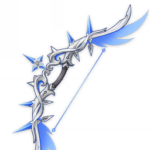

Чайлд

Тарталья (он же Чайльд) - один из лучших персонажей, который подойдет для любой команды. Он владеет как дальними, так и ближними атаками; также в его арсенале есть навык, который повышает обычную атаку каждого героя в партии на один уровень. Вдобавок некоторые из водяных способностей Тартальи отлично подходят для нанесения массового урона нескольким противникам одновременно.
Билд "Урон в секунду Гидро"
Оружие
Полярная звезда
Повышает урон умений стихий и элементального взрыва на 12/15/18/21/24%. Если обычная или заряженная атака, умение стихий или элементальный взрыв поразит врага, будет получен 1 уровень эффекта Звезда полярной ночи на 12 секунд. Когда будет собрано 1/2/3/4 уровней Звезды полярной ночи, атака увеличится на 10/20/30/48%. Уровень Звезды полярной ночи, созданный с помощью обычной атаки, заряженной атаки, умения стихий или элементального взрыва, будет засчитан независимо от остальных.
или
Ржавый лук

Увеличивает урон обычной атаки на 40/50/60/70/80%, но снижает урон прицельного выстрела на 8/9/10/11/12%.
Артефакты
Сердце глубин

(2) +15% к водяному урону (Гидро).
(4) После использования умений стихий увеличивает урон обычной и заряженной атаки на 30% на 15 секунд.
или
Воспоминания Симэнавы

(2) +18% к атаке
и
Сердце глубин
(2) +15% к водяному урону (Гидро).
Рекомендуемые характеристики артефактов
Основные

Атака%

Урон Гидро

Шанс критического попадания / Урон
Второстепенные
- 1.Шанс критического попадания / Урон
- 2.Здоровье%
- 3.Атака%
- 4.Восстановление энергии
- 5.Атака
- 6.Здоровье